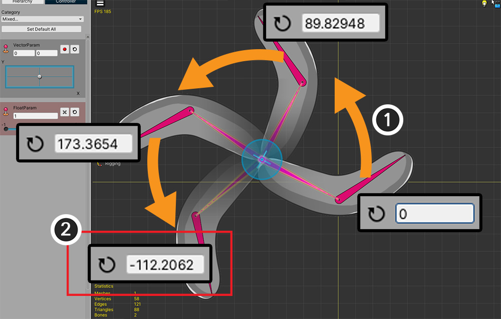
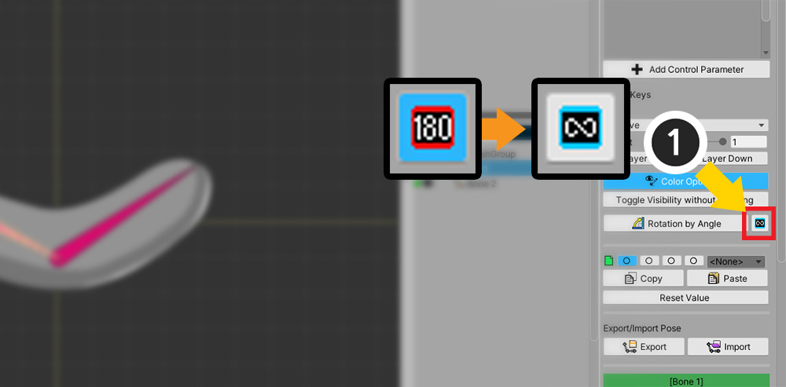
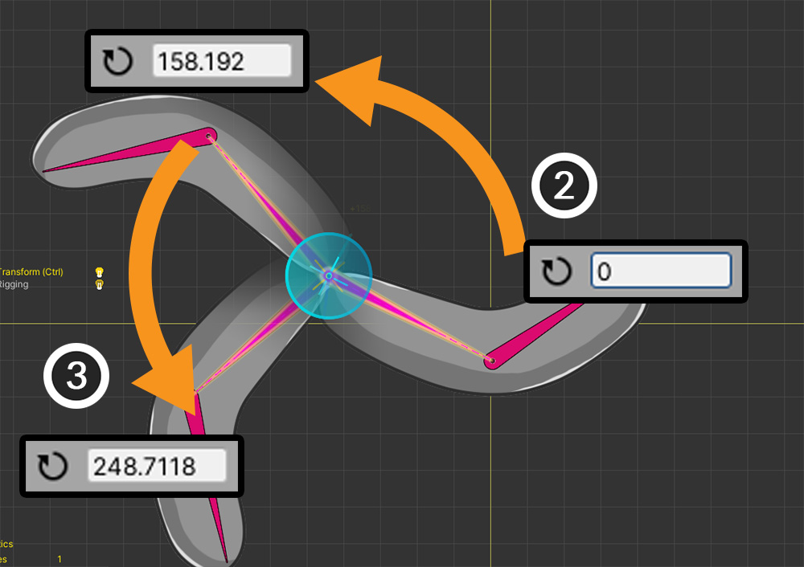
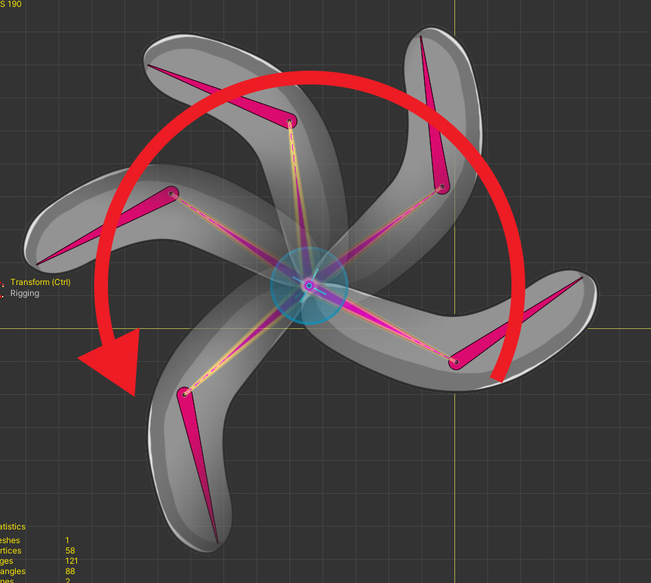
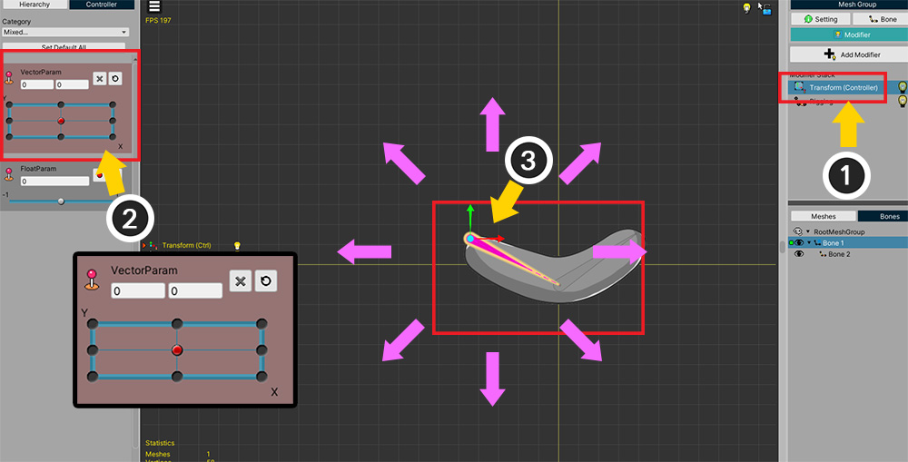
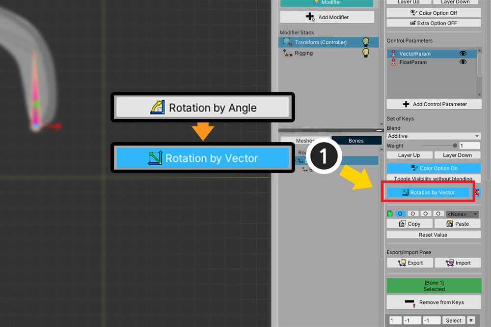
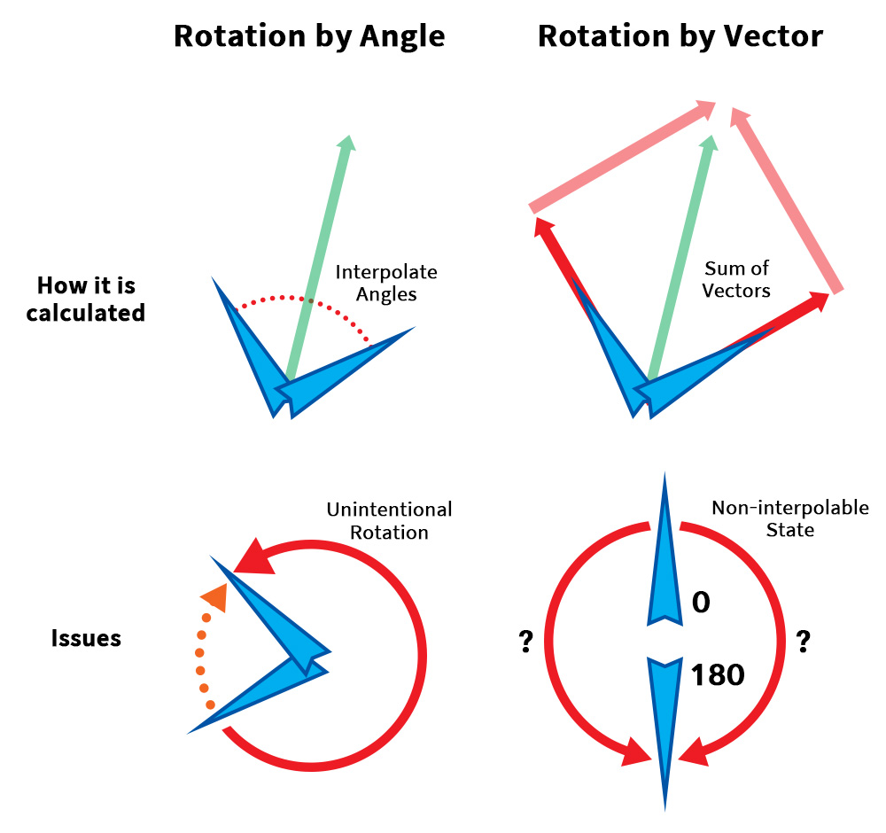

AnyPortrait > Manual > Rotation in the Transform modifier
Rotation in the Transform modifier
1.3.4
We've received feedback on some issues with rotating objects in the "Transform (Controller)" modifier.
In v1.3.4, the problem was solved by arranging it into two main categories.
One is "Limitation of rotation", which has already been introduced in animation editing, and the other is "Rotation by Vector".
Turn off rotation angle limitation
This feature is a function that already exists when editing animations. (Related page)
This page also briefly introduces how to use it.

This is an example that will be used on this page.
There are bones, to which 1 mesh is attached.
We've applied a Transform (Controller) modifier, and we're going to rotate the bone.

(1) Let's select a bone and make it rotate counterclockwise using the mouse.
(2) However, at the point where it goes beyond 180 degrees, you can see that the angle suddenly switches to negative.

If you move the bone with the control parameter in this state, the intended rotation is counterclockwise, but actually it rotates in the opposite direction.
This is because AnyPortrait's rotation gizmo has "Limitation of Rotation Angle", which is enabled by default.
This causes the value to be constrained from -180 to +180 when rotating the object using the gizmo.
But in this case it is necessary to release the limitation.

(1) Press the "180" button on the right UI to change to "Infinite".

(2) Let's rotate the bone counterclockwise again.
(3) Now you can see the value keep increasing even beyond 180 degrees.

This is the finished result.
You can see that it rotates counterclockwise as intended.
Rotation by Vector
This can be a rather difficult topic.
When interpolating "Rotation Value" in AnyPortrait, "Angle" is used as it is.
This is the most obvious way, but problems arise when:
- When interpolating two or more keys with a large difference
- When keys are cycled
The above does not happen with keyframe-based animations.
However, in "Transform modifier using Vector2 type control parameter", the above condition is satisfied.
To solve this problem, we need a "new interpolation technique" not "Rotation by Angle".

(1) Added "Transform (Controller) modifier".
(2) The control parameter of the Vector2 type to the modifier is added, and added keys in all directions.
(3) We want to make the bone move and rotate in all directions according to the control parameter.

We made the bones move according to each direction of the control parameter.

(1) When the value of the control parameter changes (2) the bone generally moves well in that direction.

(1) But in some sections (2) you can see that the bone rotates in a strange direction.
This is the problem with "Rotation by Angle" described earlier.
To solve this problem, a new technique called "Rotation by Vector" was added in v1.3.4.

(1) In the settings of the modifier, press the "Rotation by Angle" button and change it to "Rotation by Vector".

Bone now moves normally in all directions when the value of the control parameter changes.

The "Rotate by Vector" approach performs interpolation with a different approach.
This method converts "angle" to "vector" once, then computes "weighted vector sum".
After that, it goes through the process of converting the "vector sum result" back to "angle".
Thanks to this, even when keys are cycled or when two or more keys are complexly interpolated, values can be obtained through an intuitive operation called vector sum.
However, this method is not perfect.
Check out the limitations of each method.
Cons of "Rotation by Angle"
- When there are two or more keys or when interpolating keys that are cycled, they can be rotated in an unintended direction.
Cons of "Rotation by Vector"
- Interpolation may not be possible if the vector sum is 0, such as two keys forming an exact 180 degree angle.
- Due to the nature of vector summation, all interpolated rotations are limited to within 180 degrees.
- Since the calculation method is complicated, the performance is slightly reduced.